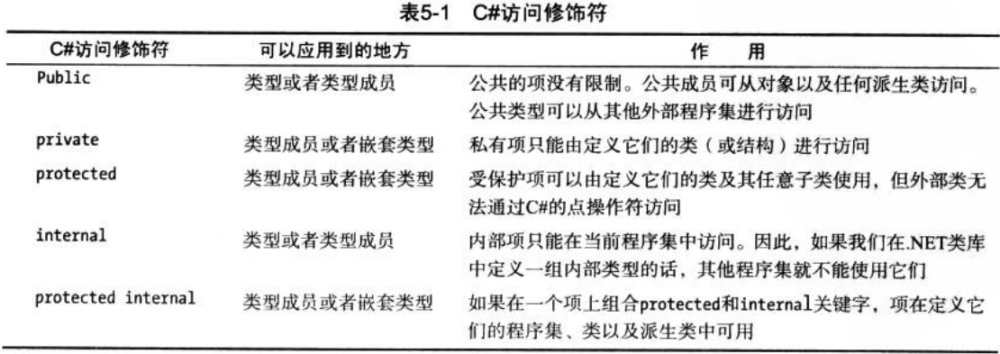

访问修饰符有public、private、protected、internal和protected internal。它们是修饰在类型（类、接口、委托、结构和枚举）和类型成员（字段、属性、方法、构造函数等等）上控制其访问权限的关键字。
访问修饰符虽然是修饰在类型和类型成员上的，但它却控制着C#程序物理结构层次（程序集/类型/类型成员）之间的访问权限。如果把程序集看作国家，那么类型就是国家的所有事物，而类型成员是所有事物的属性和行为。我们把我们国家的人（类型）的心理活动这个属性（类型成员）定义成private，那么除了自己以外的人就不能访问到你的心理活动；我们把我们国家的秘密武器（类型）定义成internal，那么其他国家就无法访问到我们国家的秘密武器。
1 /// <summary>
2 /// 洗衣机的类定义成internal，其他程序集不能访问这个洗衣机的类
3 /// </summary>
4 internal class WashingMachine
5 {
6 /// <summary>
7 /// 洗衣时长定义成private，其他类就不能使用洗衣时长这个字段，但洗衣机这个类里的其他成员可以使用
8 /// </summary>
9 private int duration;
10 }访问修饰符表（来源精通C#第六版）

注：从表中可以看出类型只能使用public和internal修饰（嵌套类型除外）。
注1：嵌套类型是指类型作为其他类型的类型成员。
注2：当不使用访问修饰符修饰类型或者类型成员时，编译器会赋予他们默认的访问修饰符，类型为internal，类型成员为private。
注3：接口类型与枚举类型的成员，不能使用访问修饰符，因为它们始终是公共的。
注4：结构类型不能使用protected，因为结构类型是值类型，不能被继承。
1 public class House
2 {
3 //类WashingMachine这里是House类的类型成员，也叫嵌套类型
4 private WashingMachine washingMachine;
5 }